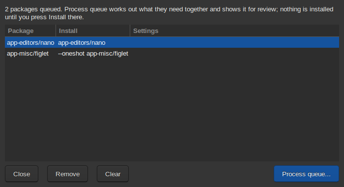

Porthole installs the way an experienced Gentoo user would: it works out everything the packages need, checks that it will go through, and shows you the plan before anything is built.
Select a package and press Emerge (or right-click it). A short message confirms it was added to the install queue; the Queue button counts what is in it. Collect as many packages as you like: they are planned together, which is faster and avoids conflicts between separate installs.

Press Queue, then Process queue. Porthole works out what the packages need, as you (no password), and shows the plan in the review window: what will be built, any setting changes needed (such as a USE flag on a dependency, or accepting a testing version), and anything that can't be done. Every change shown has been checked with Portage.
Nothing is installed yet. You can close the review and come back, or remove packages from the queue and process it again.
Press Install. You are asked for the administrator password (unless Porthole is unlocked). If a build window is set, you can choose to build in it instead of now: see How updates run.
The job then runs in the background, as root. Before building, it works out the plan again and goes ahead only if it is the plan you approved; if something changed in the meantime (a sync, a settings change), it stops and asks you to review again. The job window shows the build; closing it or Porthole doesn't stop the job.
If an install fails or you stop it, what it didn't get to goes back into the install queue as Unfinished: ..., minus anything already built. Process the queue to carry on, or remove it there.
USE flags and keywords chosen in Advanced Emerge go into the plan as
setting changes, and are written to Porthole's own files
(/etc/portage/package.use/zz-porthole and
package.accept_keywords/zz-porthole), each line with a comment
saying why, only when you press Install. They stay valid for later versions
of the package. You can edit or remove those lines like any of your own.
Next: Advanced Emerge